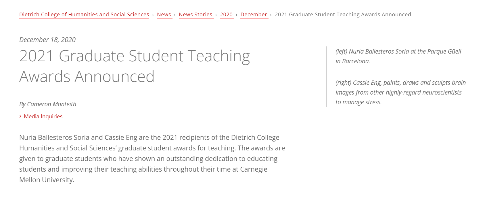
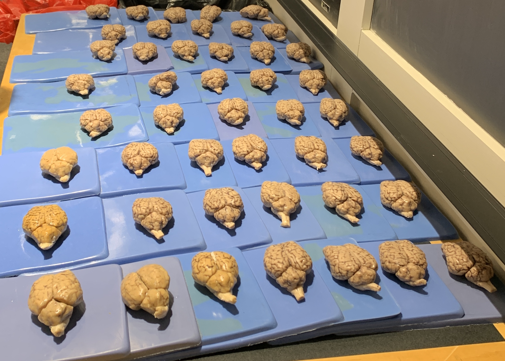
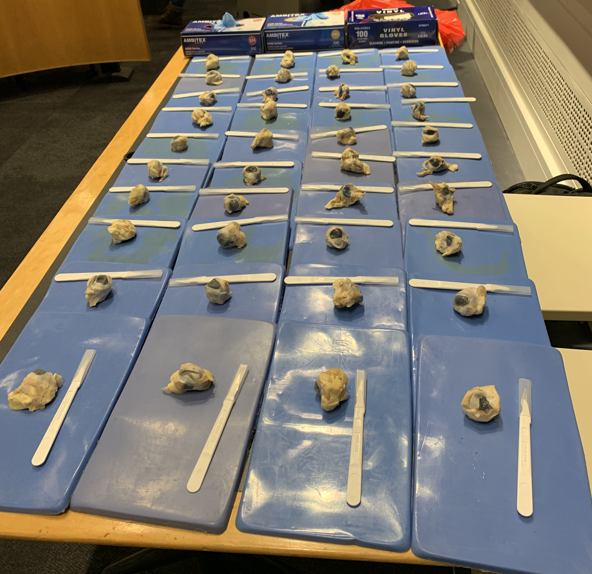

Teaching & Innovation
Each year, the Dietrich College of Humanities & Social Sciences selects two individuals out of the entire college for the Outstanding Graduate Student Teaching Award that recognize excellence, dedication, and innovation in teaching at Carnegie Mellon University.
Dietrich College Humanities and Social Sciences’ Graduate Student Award for Teaching After I teach, as long as one student learned something new, generated a question, or altered a previous mental model, a positive change was made.
Teaching Experience
Invited Guest Lecturer
| Lecture | Course | Instructor | Year |
| Executive Functioning, Prefrontal Cortex Development, and Technology | PSYC2400 Developmental Psychology University of Connecticut | Miller | 2023 |
| Immersive Game-based Exercise Interventions to Improve Brain and Cognitive Functioning | PSYC237 Health Psychology Trinity College | Chin | 2023 |
| MATLAB NIRS Toolbox for Analysis of Functional Connectivity Data | CIBSR Center for Interdisciplinary Brain Sciences Research Stanford University | Eng | 2022 |
| Facing and Adapting to Research Challenges in Graduate School | PSY85509 Research in Psychology Practicum Carnegie Mellon University | O’leary | 2021 |
| Developmental Neuroimaging Research Methods | PSY5314 Cognitive Neuroscience Research Methods Carnegie Mellon University | Vargas | 2020 |
| Learning Theories and Behaviorism | PSY85102 Introduction to Psychology Carnegie Mellon University | Manke | 2019 |
| Statistical Concepts for the Analysis of EEG | STAT36490 Statistics and Data Science Carnegie Mellon University | Freeman | 2019 |
| Eye Tracking Methodology and Statistical Analysis | STAT36490 Statistics and Data Science Carnegie Mellon University | Freeman | 2019 |
| Social Development | PSY85241 Social Psychology Carnegie Mellon University | Helgeson | 2017 |
Graduate Teaching Assistant, Carnegie Mellon University
Fall 2021 Biological Foundations of Behavior, PSY85219 [Remote Learning] Instructor Lori Holt- Designed and implemented weekly quizzes and generated open-book, open-ended assignments covering material on foundational topics in cognitive neuroscience
- Guided and delegated responsibilities to 6 undergraduate teaching assistants remotely
- Developed and optimized instructor-student communication through virtual interface
- Ensured accessibility to accommodations for equal opportunity to maximize learning
- Renovated curriculum from few high-stake tests into several low-stake assessments
- Converted all in-person hardcopy assessments to remote online learning formats
- Managed and delegated responsibilities to 4 undergraduate teaching assistants
- Prepared safety equipment and hazardous cleanup materials for eye and brain dissection labs



- Collaboratively developed and taught lesson plans and lectures for weekly recitations
- Led weekly recitation classes, office hours, and exam review sessions
- Gave critical feedback and guidance to 7 undergraduate teaching assistants
- Guest Lecture on Learning and Behaviorism:
Fall 2019 Social Psychology, PSY85241, Instructor Vicki Helgeson
- Designed exam and writing assignment assessments and rubrics
- Developed material and practice questions for exam review sessions and delivered lecture
- Delegated responsibilities to 4 teaching assistants and held weekly office hours
- Guest Lecture on Social Development: